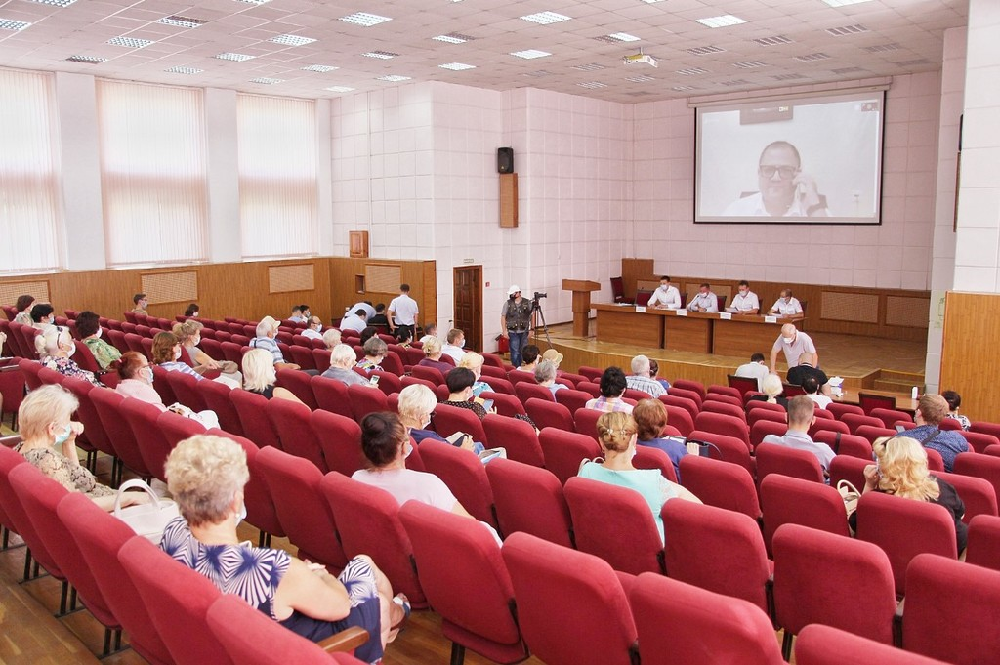

29 липня 2021
Жителі обговорили розвиток центру Миколаєва
с місцевою адміністрацією
/ Жителі обговорили розвиток центру Миколаєва с місцевою адміністрацією
Двоє юних науковців Миколаївського муніципального колегіуму імені В.Д. Чайки
тали переможцями на фінальному етапі XІІ Всеукраїнської науково-технічної виставки
конкурсу молодіжних інноваційних проєктів «Майбутнє України»
Едуард Міхрін виборов перше місце в номінації «Електроніка та приладобудування»
з роботою «Створення демонстраційної установки рисунків хладоні на основі доступних сучасних технологій в домашніх умовах».
Владислав Лобов посів третє місце в номінації
«Технічна творчість та винахідництво» з роботою «Сучасні підходи до демонстрації фігур ліссажу».
Вітаємо учнів з високими здобутками, бажаємо натхнення до творчих розробок!
Висловлюємо велику подяку науковому керівнику
Максиму Борисенку за підтримку, бажання надихати учнів на реалізацію проєктів!